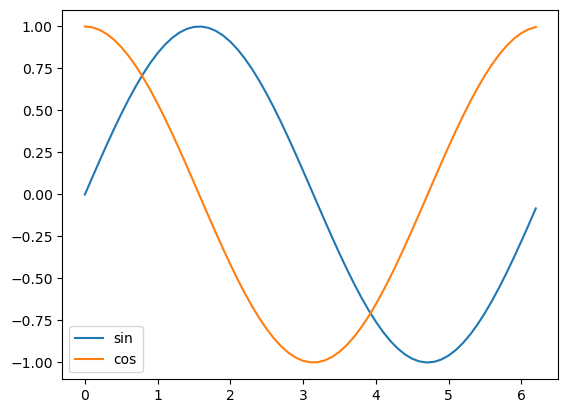

Basics#
Numeric data types#
8 * 9 # expression: values and operators
72
8
8
type(8 * 9)
int
type(8 / 9)
float
8 / 9
0.8888888888888888
8 // 9 # floor division
0
11 // 9
1
11 % 9 # modules , remainder
2
Complex number
x: real part y: imaginary part
type(1j)
complex
1j * 1j
(-1+0j)
1j ** 2
(-1+0j)
True
True
False
False
type(True)
bool
True or False
True
True and False
False
123 % 2 == 0 # True for even numbers
False
124 % 2 == 0 # True for even numbers
True
1 + 2 == 3
True
0.1 + 0.2 == 0.3
False
0.1 + 0.2
0.30000000000000004
Strings#
'Hello world'
'Hello world'
type('Hello world')
str
"Hello world"
'Hello world'
'Hello' == "Hello"
True
'It's time to go'
Cell In[26], line 1
'It's time to go'
^
SyntaxError: unterminated string literal (detected at line 1)
'It\'s time to go' # here \' means the literal apostrophe
"It's time to go"
"It's time to go"
"It's time to go"
"It's time\nto go" # \n refers to newline character
"It's time\nto go"
print("It's time\nto go")
It's time
to go
"It's time
to go"
Cell In[27], line 1
"It's time
^
SyntaxError: unterminated string literal (detected at line 1)
"""It's time
to go"""
"It's time\nto go"
# string operators
"Hello" + " world"
'Hello world'
"Hello" * " world"
---------------------------------------------------------------------------
TypeError Traceback (most recent call last)
Cell In[30], line 1
----> 1 "Hello" * " world"
TypeError: can't multiply sequence by non-int of type 'str'
"Hello" * 3
'HelloHelloHello'
print("Hello world" + "\n" + len("Hello world")*'_')
Hello world
___________
# datatypes are also functions that convert values from one type to another
type(int('77'))
int
# ask year of birth and report age
print("What year were you born?")
year_of_birth = input()
print(year_of_birth)
age = 2025 - int(year_of_birth)
print("This year you will be " + str(age) + " years old")
print("This year you will be", age, "years old")
print(f"This year you will be {age} years old")
What year were you born?
1961
This year you will be 64 years old
This year you will be 64 years old
This year you will be 64 years old
Lists#
colours = ['hearts', 'spades', 'diamonds', 'clubs']
values = [2, 3, 4, 5, 6, 7, 8, 9, 10, 'knight', 'queen', 'king', 'ace']
dir(colours)
['__add__',
'__class__',
'__class_getitem__',
'__contains__',
'__delattr__',
'__delitem__',
'__dir__',
'__doc__',
'__eq__',
'__format__',
'__ge__',
'__getattribute__',
'__getitem__',
'__getstate__',
'__gt__',
'__hash__',
'__iadd__',
'__imul__',
'__init__',
'__init_subclass__',
'__iter__',
'__le__',
'__len__',
'__lt__',
'__mul__',
'__ne__',
'__new__',
'__reduce__',
'__reduce_ex__',
'__repr__',
'__reversed__',
'__rmul__',
'__setattr__',
'__setitem__',
'__sizeof__',
'__str__',
'__subclasshook__',
'append',
'clear',
'copy',
'count',
'extend',
'index',
'insert',
'pop',
'remove',
'reverse',
'sort']
colours + colours
['hearts',
'spades',
'diamonds',
'clubs',
'hearts',
'spades',
'diamonds',
'clubs']
len(colours)
4
len(values)
13
colours[0] # the first elements
'hearts'
colours[3]
'clubs'
colours[-1]
'clubs'
values.append('joker')
values
[2, 3, 4, 5, 6, 7, 8, 9, 10, 'knight', 'queen', 'king', 'ace', 'joker']
values.pop?
Signature: values.pop(index=-1, /)
Docstring:
Remove and return item at index (default last).
Raises IndexError if list is empty or index is out of range.
Type: builtin_function_or_method
values.pop()
'joker'
values
[2, 3, 4, 5, 6, 7, 8, 9, 10, 'knight', 'queen', 'king', 'ace']
colours
['hearts', 'spades', 'diamonds', 'clubs']
colours.sort()
colours
['clubs', 'diamonds', 'hearts', 'spades']
colours.reverse()
colours
['spades', 'hearts', 'diamonds', 'clubs']
Tuples#
card1 = (colours[0], values[0])
card1
('hearts', 2)
dir(card1)
['__add__',
'__class__',
'__class_getitem__',
'__contains__',
'__delattr__',
'__dir__',
'__doc__',
'__eq__',
'__format__',
'__ge__',
'__getattribute__',
'__getitem__',
'__getnewargs__',
'__getstate__',
'__gt__',
'__hash__',
'__init__',
'__init_subclass__',
'__iter__',
'__le__',
'__len__',
'__lt__',
'__mul__',
'__ne__',
'__new__',
'__reduce__',
'__reduce_ex__',
'__repr__',
'__rmul__',
'__setattr__',
'__sizeof__',
'__str__',
'__subclasshook__',
'count',
'index']
card1.index(2)
1
Slicing#
values
[2, 3, 4, 5, 6, 7, 8, 9, 10, 'knight', 'queen', 'king', 'ace']
# list[start: end: step]
values[1: 5]
[3, 4, 5, 6]
values[0: 13: 2] # every second element
[2, 4, 6, 8, 10, 'queen', 'ace']
values[::2]
[2, 4, 6, 8, 10, 'queen', 'ace']
# the first 9 elements
values[:9]
[2, 3, 4, 5, 6, 7, 8, 9, 10]
# the last 4 elements
values[-4:]
['knight', 'queen', 'king', 'ace']
#cmopare
"Hello world"[-4:]
'orld'
Dictionaries#
d = {'a': 1, 'b': 2}
len(d)
2
d.keys()
dict_keys(['a', 'b'])
d.values()
dict_values([1, 2])
d['a']
1
d['b']
2
{'a': 1, 'b': 2} == {'b': 2, 'a': 1}
True
# Card game
game = {
'player1': [],
'player2': []
}
deck = [ ('hearts', 2), ('clubs', 4), ('diamonds', 10), ('spades', 5) ]
game['player1'].append(deck.pop())
print(game)
print(deck)
game['player2'].append(deck.pop())
print(game)
print(deck)
game['player1'].append(deck.pop())
print(game)
print(deck)
game['player2'].append(deck.pop())
print(game)
print(deck)
{'player1': [('spades', 5)], 'player2': []}
[('hearts', 2), ('clubs', 4), ('diamonds', 10)]
{'player1': [('spades', 5)], 'player2': [('diamonds', 10)]}
[('hearts', 2), ('clubs', 4)]
{'player1': [('spades', 5), ('clubs', 4)], 'player2': [('diamonds', 10)]}
[('hearts', 2)]
{'player1': [('spades', 5), ('clubs', 4)], 'player2': [('diamonds', 10), ('hearts', 2)]}
[]
game
{'player1': ('clubs', 4), 'player2': ('hearts', 2)}
Repetition#
for-loops#
colours
['spades', 'hearts', 'diamonds', 'clubs']
deck = []
for colour in colours:
print(colour)
for value in values:
print(value, end=' ')
card = (colour, value)
deck.append(card)
print()
spades
2 3 4 5 6 7 8 9 10 knight queen king ace
hearts
2 3 4 5 6 7 8 9 10 knight queen king ace
diamonds
2 3 4 5 6 7 8 9 10 knight queen king ace
clubs
2 3 4 5 6 7 8 9 10 knight queen king ace
len(deck)
52
#for x in game.keys():
for player in game:
print(player)
print(f"Player {player} has hand {game[player]}")
player1
Player player1 has hand [('spades', 5), ('clubs', 4)]
player2
Player player2 has hand [('diamonds', 10), ('hearts', 2)]
for x in game.items():
print(x)
('player1', [('spades', 5), ('clubs', 4)])
('player2', [('diamonds', 10), ('hearts', 2)])
for x in game.items():
player = x[0]
hand = x[1]
print(f"Player {player} has hand {hand}")
Player player1 has hand [('spades', 5), ('clubs', 4)]
Player player2 has hand [('diamonds', 10), ('hearts', 2)]
for x in game.items():
player, hand = x
print(f"Player {player} has hand {hand}")
Player player1 has hand [('spades', 5), ('clubs', 4)]
Player player2 has hand [('diamonds', 10), ('hearts', 2)]
for player, hand in game.items():
print(f"Player {player} has hand {hand}")
Player player1 has hand [('spades', 5), ('clubs', 4)]
Player player2 has hand [('diamonds', 10), ('hearts', 2)]
Branching#
if statements#
# game where largest sum of value wins
if False:
print('yes')
else:
print('no')
no
# sum up card values for player 1
value1 = 0
for card in game['player1']:
value1 = value1 + card[1]
print(value1)
9
# sum up card values for player 2
value2 = 0
for card in game['player2']:
value2 = value2 + card[1]
print(value2)
12
# The player with largest value wins
if value1 > value2:
print("Player1 wins")
else:
print("Player2 wins")
Player2 wins
Functions#
print
<function print(*args, sep=' ', end='\n', file=None, flush=False)>
print("Hello")
Hello
len
<function len(obj, /)>
len('abc')
3
len([1,2,])
2
len({'a': 1})
1
input
<bound method Kernel.raw_input of <ipykernel.ipkernel.IPythonKernel object at 0x76c325a1b380>>
input()
'hello'
#dir()
dir(__builtins__)
['ArithmeticError',
'AssertionError',
'AttributeError',
'BaseException',
'BaseExceptionGroup',
'BlockingIOError',
'BrokenPipeError',
'BufferError',
'BytesWarning',
'ChildProcessError',
'ConnectionAbortedError',
'ConnectionError',
'ConnectionRefusedError',
'ConnectionResetError',
'DeprecationWarning',
'EOFError',
'Ellipsis',
'EncodingWarning',
'EnvironmentError',
'Exception',
'ExceptionGroup',
'False',
'FileExistsError',
'FileNotFoundError',
'FloatingPointError',
'FutureWarning',
'GeneratorExit',
'IOError',
'ImportError',
'ImportWarning',
'IndentationError',
'IndexError',
'InterruptedError',
'IsADirectoryError',
'KeyError',
'KeyboardInterrupt',
'LookupError',
'MemoryError',
'ModuleNotFoundError',
'NameError',
'None',
'NotADirectoryError',
'NotImplemented',
'NotImplementedError',
'OSError',
'OverflowError',
'PendingDeprecationWarning',
'PermissionError',
'ProcessLookupError',
'PythonFinalizationError',
'RecursionError',
'ReferenceError',
'ResourceWarning',
'RuntimeError',
'RuntimeWarning',
'StopAsyncIteration',
'StopIteration',
'SyntaxError',
'SyntaxWarning',
'SystemError',
'SystemExit',
'TabError',
'TimeoutError',
'True',
'TypeError',
'UnboundLocalError',
'UnicodeDecodeError',
'UnicodeEncodeError',
'UnicodeError',
'UnicodeTranslateError',
'UnicodeWarning',
'UserWarning',
'ValueError',
'Warning',
'ZeroDivisionError',
'_IncompleteInputError',
'__IPYTHON__',
'__build_class__',
'__debug__',
'__doc__',
'__import__',
'__loader__',
'__name__',
'__package__',
'__spec__',
'abs',
'aiter',
'all',
'anext',
'any',
'ascii',
'bin',
'bool',
'breakpoint',
'bytearray',
'bytes',
'callable',
'chr',
'classmethod',
'compile',
'complex',
'copyright',
'credits',
'delattr',
'dict',
'dir',
'display',
'divmod',
'enumerate',
'eval',
'exec',
'execfile',
'filter',
'float',
'format',
'frozenset',
'get_ipython',
'getattr',
'globals',
'hasattr',
'hash',
'help',
'hex',
'id',
'input',
'int',
'isinstance',
'issubclass',
'iter',
'len',
'license',
'list',
'locals',
'map',
'max',
'memoryview',
'min',
'next',
'object',
'oct',
'open',
'ord',
'pow',
'print',
'property',
'range',
'repr',
'reversed',
'round',
'runfile',
'set',
'setattr',
'slice',
'sorted',
'staticmethod',
'str',
'sum',
'super',
'tuple',
'type',
'vars',
'zip']
# define our own function, make this a function
"""
value1 = 0
for card in game['player1']:
value1 = value1 + card[1]
print(value1)
"""
"\nvalue1 = 0\nfor card in game['player1']:\n value1 = value1 + card[1]\nprint(value1)\n"
A function definition
start with the def keyword, a name, parentheses, colon
function body (indented)
values are passed to the function as arguments
parameters of a function are variables the hold these values
variables defined inside the function are not valid outside the function
The lines in a function body are executed when the function is called
the value of a function call is defined by a return statement in the function body
the None object represents absence of something, is returned in the absence of a return statement
global scope: variables not defined in any function local scope: variable defined inside a function (only valid locally)
a function can use value in the global scope
#define the function
def calculate_hand_value(card_game, player):
value = 0
for card in card_game[player]:
value = value + card[1]
print(value)
return value
# call function
calculate_hand_value(game, 'player1') #value of game is passed to function parameter card_game, 'player1' is passed to parameter player
calculate_hand_value(game, 'player2')
9
12
12
result = calculate_hand_value(game, 'player1')
result == 9
9
True
print(result)
9
print(value)
ace
# alternative with global game
def calculate_hand_value2(player):
value = 0
for card in game[player]:
value = value + card[1]
print(value)
return value
calculate_hand_value2('player1')
9
9
print?
Signature: print(*args, sep=' ', end='\n', file=None, flush=False)
Docstring:
Prints the values to a stream, or to sys.stdout by default.
sep
string inserted between values, default a space.
end
string appended after the last value, default a newline.
file
a file-like object (stream); defaults to the current sys.stdout.
flush
whether to forcibly flush the stream.
Type: builtin_function_or_method
print('Hello', 'world', end='') # args parameter will be the tuple ('Hello', 'world')
print('Hello', 'world', sep='-')
Hello worldHello-world
# previous example with keyword
# alternative with global game as an optional argument
def calculate_hand_value3(player, card_game=game):
"""
Calculate the value of the hand of player
"""
_value = 0
for _card in card_game[player]:
_value = _value + _card[1]
return _value
calculate_hand_value3?
Signature:
calculate_hand_value3(
player,
card_game={'player1': [('spades', 5), ('clubs', 4)], 'player2': [('diamonds', 10), ('hearts', 2)]},
)
Docstring: Calculate the value of the hand of player
File: /tmp/ipykernel_127327/3892734418.py
Type: function
help(calculate_hand_value3)
Help on function calculate_hand_value3 in module __main__:
calculate_hand_value3(
player,
card_game={'player1': [('spades', 5), ('clubs', 4)], 'player2': [('diamonds', 10), ('hearts', 2)]}
)
Calculate the value of the hand of player
calculate_hand_value3('player1')
9
_value # only defined locally inside the function, not globally
---------------------------------------------------------------------------
NameError Traceback (most recent call last)
Cell In[176], line 1
----> 1 _value
NameError: name '_value' is not defined
Modules#
import hello
dir(hello)
['__builtins__',
'__cached__',
'__doc__',
'__file__',
'__loader__',
'__name__',
'__package__',
'__spec__',
'hello_world']
hello.hello_world()
Hello
Goodbye
import on a python file runs all code in it
definitions in the file are saved in so called namespace
# %load hello.py
import sys
def hello_world():
if len(sys.argv) > 1:
print("Hello", sys.argv[1])
else:
print("Hello")
print("Goodbye")
if __name__ == "__main__": #do not run this code during import
hello_world()
print("The value of __name__ is", __name__)
#import os
#dir(os)
import math
dir(math)
['__doc__',
'__file__',
'__loader__',
'__name__',
'__package__',
'__spec__',
'acos',
'acosh',
'asin',
'asinh',
'atan',
'atan2',
'atanh',
'cbrt',
'ceil',
'comb',
'copysign',
'cos',
'cosh',
'degrees',
'dist',
'e',
'erf',
'erfc',
'exp',
'exp2',
'expm1',
'fabs',
'factorial',
'floor',
'fma',
'fmod',
'frexp',
'fsum',
'gamma',
'gcd',
'hypot',
'inf',
'isclose',
'isfinite',
'isinf',
'isnan',
'isqrt',
'lcm',
'ldexp',
'lgamma',
'log',
'log10',
'log1p',
'log2',
'modf',
'nan',
'nextafter',
'perm',
'pi',
'pow',
'prod',
'radians',
'remainder',
'sin',
'sinh',
'sqrt',
'sumprod',
'tan',
'tanh',
'tau',
'trunc',
'ulp']
math.pi
3.141592653589793
math.sin(math.pi)
1.2246467991473532e-16
math.sin(math.pi/2)
1.0
#optional import
from math import pi, sin, cos
sin(pi/4)
0.7071067811865475
cos(pi/4)
0.7071067811865476
Files#
f = open('hello.txt', mode='r') # open for reading an existing file
#dir(f)
f.read()
'Hello\nGoodbye\n'
f.read()
''
f = open('hello.txt', mode='r') # open for reading an existing file
f.readable()
f.readline() # read one lnie at a tome
'Hello\n'
f.readline()
'Goodbye\n'
f.readline()
''
f = open('hello.txt', mode='r') # open for reading an existing file
f.readlines() # read the file into a list of lines
['Hello\n', 'Goodbye\n']
f = open('hello.txt', mode='r') # open for reading an existing file
for line in f:
#print(line.upper(), end='')
print(line.strip().upper())
HELLO
GOODBYE
new = open('newhello.txt', mode='w')
new.write("Hello")
new.write("World!")
6
!ls -l
total 92
-rw-rw-r-- 1 bb1000-vt25 bb1000-vt25 1816 mar 31 16:00 Demo.ipynb
-rw-rw-r-- 1 bb1000-vt25 bb1000-vt25 279 mar 31 15:55 hello.py
-rw-rw-r-- 1 bb1000-vt25 bb1000-vt25 14 mar 31 16:46 hello.txt
-rw-rw-r-- 1 bb1000-vt25 bb1000-vt25 149 mar 31 16:30 mult_table.py
-rw-rw-r-- 1 bb1000-vt25 bb1000-vt25 0 mar 31 16:57 newhello.txt
-rw-rw-r-- 1 bb1000-vt25 bb1000-vt25 68397 mar 31 16:58 Notes.ipynb
drwxrwxr-x 2 bb1000-vt25 bb1000-vt25 4096 mar 31 15:55 __pycache__
-rw-rw-r-- 1 bb1000-vt25 bb1000-vt25 91 mar 18 09:39 untitled.md
new.close()
!ls -l newhello.txt
-rw-rw-r-- 1 bb1000-vt25 bb1000-vt25 11 mar 31 17:00 newhello.txt
!cat newhello.txt
HelloWorld!
# use write method to get separate lines
with open('newhello.txt', 'w') as new:
new.write("Hello\n")
new.write("World!\n")
!cat newhello.txt
Hello
World!
# add text to end of a file
with open("newhello.txt", 'a') as f:
f.write("Goodbye")
!cat newhello.txt
Hello
World!
Goodbye
pathlib module#
import pathlib
ls /home/bb1000-vt25/Downloads/MOCK_DATA.csv
/home/bb1000-vt25/Downloads/MOCK_DATA.csv
# in windows C:\HOME\BB1000\DOWNLOADS\MOCK_DATA.csv
datafile = pathlib.Path.home() / 'Downloads' / 'MOCK_DATA.csv'
datafile
PosixPath('/home/bb1000-vt25/Downloads/MOCK_DATA.csv')
open(datafile).readline()
'id,first_name,last_name,email,gender,ip_address,employee_id,salary,department\n'
#compare mean salaries for different genders
all_lines = open(datafile).readlines()
gender_data = {} # {'gender': [salaries..]}
for line in all_lines[1:]:
fields = line.split(',') # fields are values of single row/line
gender = fields[4]
salary = int(fields[7])
if gender in gender_data: # is gender present as a key in the dictionary gender_data?
gender_data[gender].append(salary)
else:
gender_data[gender] = [salary]
gender_data.keys()
dict_keys(['Male', 'Genderfluid', 'Female', 'Genderqueer', 'Non-binary', 'Bigender', 'Polygender', 'Agender'])
for gender, salaries in gender_data.items():
mean = round(sum(salaries)/len(salaries))
print(gender, mean, len(salaries))
Male 84138 444
Genderfluid 95577 17
Female 86417 448
Genderqueer 86913 24
Non-binary 86858 17
Bigender 87399 20
Polygender 77018 18
Agender 96232 12
csv module#
import csv
#dir(csv)
for line in csv.reader(open(datafile)):
print(line)
break
['id', 'first_name', 'last_name', 'email', 'gender', 'ip_address', 'employee_id', 'salary', 'department']
csv.reader?
Docstring:
csv_reader = reader(iterable [, dialect='excel']
[optional keyword args])
for row in csv_reader:
process(row)
The "iterable" argument can be any object that returns a line
of input for each iteration, such as a file object or a list. The
optional "dialect" parameter is discussed below. The function
also accepts optional keyword arguments which override settings
provided by the dialect.
The returned object is an iterator. Each iteration returns a row
of the CSV file (which can span multiple input lines).
Type: builtin_function_or_method
all_lines = list(csv.reader(open(datafile)))
all_lines[1:5]
[['1',
'Lucius',
'Feehery',
'lfeehery0@wiley.com',
'Male',
'155.143.110.178',
'1',
'123759',
'Legal'],
['2',
'Melina',
'Jossel',
'mjossel1@slideshare.net',
'Genderfluid',
'238.182.167.147',
'2',
'91045',
'Support'],
['3',
'Davide',
'Allin',
'dallin2@com.com',
'Male',
'151.26.69.126',
'3',
'66863',
'Accounting'],
['4',
'Angeline',
'Got',
'agot3@amazon.com',
'Female',
'225.181.149.174',
'4',
'45217',
'Human Resources']]
csv.DictReader?
Init signature:
csv.DictReader(
f,
fieldnames=None,
restkey=None,
restval=None,
dialect='excel',
*args,
**kwds,
)
Docstring: <no docstring>
File: ~/miniconda3/envs/bb1000/lib/python3.13/csv.py
Type: type
Subclasses:
for line in c: # line will be a dictionary with header values as keys
print(line)
break
---------------------------------------------------------------------------
NameError Traceback (most recent call last)
Cell In[31], line 1
----> 1 for line in c: # line will be a dictionary with header values as keys
2 print(line)
3 break
NameError: name 'c' is not defined
gender_data = {} # {'gender': [salaries..]}
for line in csv.DictReader(open(datafile)):
salary = int(line['salary'])
gender = line['gender']
if gender in gender_data: # is gender present as a key in the dictionary gender_data?
gender_data[gender].append(salary)
else:
gender_data[gender] = [salary]
for gender, salaries in gender_data.items():
mean = round(sum(salaries)/len(salaries))
print(gender, mean, len(salaries))
Male 84138 444
Genderfluid 95577 17
Female 86417 448
Genderqueer 86913 24
Non-binary 86858 17
Bigender 87399 20
Polygender 77018 18
Agender 96232 12
# with defaultdict from the collections module
import collections
collections.defaultdict?
Init signature: collections.defaultdict(self, /, *args, **kwargs)
Docstring:
defaultdict(default_factory=None, /, [...]) --> dict with default factory
The default factory is called without arguments to produce
a new value when a key is not present, in __getitem__ only.
A defaultdict compares equal to a dict with the same items.
All remaining arguments are treated the same as if they were
passed to the dict constructor, including keyword arguments.
File: ~/miniconda3/envs/bb1000/lib/python3.13/collections/__init__.py
Type: type
Subclasses: FreezableDefaultDict
counter = collections.defaultdict(int)
int()
0
counter
defaultdict(int, {})
counter['newkey']
0
counter
defaultdict(int, {'newkey': 0})
counter['another key'] = counter['anohter key'] + 1
counter
defaultdict(int, {'newkey': 0, 'anohter key': 0, 'another key': 1})
# our previous example
#gender_data = {} # {'gender': [salaries..]}
gender_data = collections.defaultdict(list)
for line in csv.DictReader(open(datafile)):
salary = int(line['salary'])
gender = line['gender']
#if gender in gender_data: # is gender present as a key in the dictionary gender_data?
# gender_data[gender].append(salary)
#else:
# gender_data[gender] = [salary]
gender_data[gender].append(salary)
for gender, salaries in gender_data.items():
mean = round(sum(salaries)/len(salaries))
print(gender, mean, len(salaries))
Male 84138 444
Genderfluid 95577 17
Female 86417 448
Genderqueer 86913 24
Non-binary 86858 17
Bigender 87399 20
Polygender 77018 18
Agender 96232 12
def select_second(t):
return t[1]
# print employees by department sorted by last name
department_personel = collections.defaultdict(list)
for line in csv.DictReader(open(datafile)):
dept = line['department']
name = (line['first_name'], line['last_name'])
#print(line, dept, name, sep='\n')
#break
department_personel[dept].append(name)
for dept, names in department_personel.items():
names.sort(key=select_second)
print('Department:', dept)
for first, last in names:
print(f'\t{first} {last}')
break
Department: Legal
Alejoa Aleksankin
Hollie Attenborrow
Benetta Bangley
Arlena Broxton
Ferd Burriss
Jenna Callacher
Valdemar Canland
Dov Cleverly
Quinlan Coslett
Lucho Coules
Ronnie Cowthart
Marieann Daughtrey
Dacy De la croix
Tucker Deeming
Pris Deinhardt
Terri Dobbson
Homerus Donwell
Sile Dunderdale
Daniele Eloi
Horatius Etherington
Lucius Feehery
Marcile Fitzackerley
Valencia Galtone
Hugibert Garrie
Mozelle Gerant
Kacey Girodier
Bobinette Gratten
Ariela Greenstock
Freddie Gricks
Meaghan Guinness
Rheta Handrik
Maggi Huller
Nicholas Hum
Marti Jodlkowski
Allianora Kaasman
Hersh Karpenko
Marcos Kulic
Nap Ledur
Allix Lidgard
Humfried Lympany
Maynord Manterfield
Corella Mattussevich
Samson Mayman
Wald McCuthais
Klement McGeown
Madison Middler
Randy Moat
Dagmar Mote
Chantal Mumby
Peadar Murtell
Thorsten Muscott
Dione Norwich
Ive O'Codihie
Elysha Orrick
Gusella Peach
Cordie Peasgood
Tiphany Philpotts
Bobby Picard
Cordie Plaskitt
Hillie Porteous
Field Poulsom
Millisent Praten
Barris Puckinghorne
Reggy Raden
Lacee Rulten
Tersina Shaefer
Beverlee Sharper
Montague Sibbs
Maxwell Simeoni
Nita Stanborough
Welsh Stelle
Urbanus Sullly
Alex Szymoni
Rowen Taffrey
Alyosha Taggett
Dyan Talloe
Justen Tessington
Francisco Tomaselli
Urbano Trevear
Victoir Warsop
Meris Whalley
Ricardo Yeaman
# how to sort a list fo tuples?
example_list = [('c', 'b'), ('a', 'd'), ('a', 'c')]
example_list.sort()
example_list
[('a', 'c'), ('a', 'd'), ('c', 'b')]
example_list.sort?
Signature: example_list.sort(*, key=None, reverse=False)
Docstring:
Sort the list in ascending order and return None.
The sort is in-place (i.e. the list itself is modified) and stable (i.e. the
order of two equal elements is maintained).
If a key function is given, apply it once to each list item and sort them,
ascending or descending, according to their function values.
The reverse flag can be set to sort in descending order.
Type: builtin_function_or_method
example_list.sort(key=select_second)
example_list
[('c', 'b'), ('a', 'c'), ('a', 'd')]
csv.DictReader??
Init signature:
csv.DictReader(
f,
fieldnames=None,
restkey=None,
restval=None,
dialect='excel',
*args,
**kwds,
)
Docstring: <no docstring>
Source:
class DictReader:
def __init__(self, f, fieldnames=None, restkey=None, restval=None,
dialect="excel", *args, **kwds):
if fieldnames is not None and iter(fieldnames) is fieldnames:
fieldnames = list(fieldnames)
self._fieldnames = fieldnames # list of keys for the dict
self.restkey = restkey # key to catch long rows
self.restval = restval # default value for short rows
self.reader = reader(f, dialect, *args, **kwds)
self.dialect = dialect
self.line_num = 0
def __iter__(self):
return self
@property
def fieldnames(self):
if self._fieldnames is None:
try:
self._fieldnames = next(self.reader)
except StopIteration:
pass
self.line_num = self.reader.line_num
return self._fieldnames
@fieldnames.setter
def fieldnames(self, value):
self._fieldnames = value
def __next__(self):
if self.line_num == 0:
# Used only for its side effect.
self.fieldnames
row = next(self.reader)
self.line_num = self.reader.line_num
# unlike the basic reader, we prefer not to return blanks,
# because we will typically wind up with a dict full of None
# values
while row == []:
row = next(self.reader)
d = dict(zip(self.fieldnames, row))
lf = len(self.fieldnames)
lr = len(row)
if lf < lr:
d[self.restkey] = row[lf:]
elif lf > lr:
for key in self.fieldnames[lr:]:
d[key] = self.restval
return d
__class_getitem__ = classmethod(types.GenericAlias)
File: ~/miniconda3/envs/bb1000/lib/python3.13/csv.py
Type: type
Subclasses:
External libraries#
import numpy
#dir(numpy)
import numpy.linalg
dir(numpy.linalg)
['LinAlgError',
'__all__',
'__builtins__',
'__cached__',
'__doc__',
'__file__',
'__loader__',
'__name__',
'__package__',
'__path__',
'__spec__',
'_linalg',
'_umath_linalg',
'cholesky',
'cond',
'cross',
'det',
'diagonal',
'eig',
'eigh',
'eigvals',
'eigvalsh',
'inv',
'linalg',
'lstsq',
'matmul',
'matrix_norm',
'matrix_power',
'matrix_rank',
'matrix_transpose',
'multi_dot',
'norm',
'outer',
'pinv',
'qr',
'slogdet',
'solve',
'svd',
'svdvals',
'tensordot',
'tensorinv',
'tensorsolve',
'test',
'trace',
'vecdot',
'vector_norm']
numpy.linalg.solve?
Signature: numpy.linalg.solve(a, b)
Call signature: numpy.linalg.solve(*args, **kwargs)
Type: _ArrayFunctionDispatcher
String form: <function solve at 0x7c52f01031a0>
File: ~/miniconda3/envs/bb1000/lib/python3.13/site-packages/numpy/linalg/_linalg.py
Docstring:
Solve a linear matrix equation, or system of linear scalar equations.
Computes the "exact" solution, `x`, of the well-determined, i.e., full
rank, linear matrix equation `ax = b`.
Parameters
----------
a : (..., M, M) array_like
Coefficient matrix.
b : {(M,), (..., M, K)}, array_like
Ordinate or "dependent variable" values.
Returns
-------
x : {(..., M,), (..., M, K)} ndarray
Solution to the system a x = b. Returned shape is (..., M) if b is
shape (M,) and (..., M, K) if b is (..., M, K), where the "..." part is
broadcasted between a and b.
Raises
------
LinAlgError
If `a` is singular or not square.
See Also
--------
scipy.linalg.solve : Similar function in SciPy.
Notes
-----
Broadcasting rules apply, see the `numpy.linalg` documentation for
details.
The solutions are computed using LAPACK routine ``_gesv``.
`a` must be square and of full-rank, i.e., all rows (or, equivalently,
columns) must be linearly independent; if either is not true, use
`lstsq` for the least-squares best "solution" of the
system/equation.
.. versionchanged:: 2.0
The b array is only treated as a shape (M,) column vector if it is
exactly 1-dimensional. In all other instances it is treated as a stack
of (M, K) matrices. Previously b would be treated as a stack of (M,)
vectors if b.ndim was equal to a.ndim - 1.
References
----------
.. [1] G. Strang, *Linear Algebra and Its Applications*, 2nd Ed., Orlando,
FL, Academic Press, Inc., 1980, pg. 22.
Examples
--------
Solve the system of equations:
``x0 + 2 * x1 = 1`` and
``3 * x0 + 5 * x1 = 2``:
>>> import numpy as np
>>> a = np.array([[1, 2], [3, 5]])
>>> b = np.array([1, 2])
>>> x = np.linalg.solve(a, b)
>>> x
array([-1., 1.])
Check that the solution is correct:
>>> np.allclose(np.dot(a, x), b)
True
Class docstring:
Class to wrap functions with checks for __array_function__ overrides.
All arguments are required, and can only be passed by position.
Parameters
----------
dispatcher : function or None
The dispatcher function that returns a single sequence-like object
of all arguments relevant. It must have the same signature (except
the default values) as the actual implementation.
If ``None``, this is a ``like=`` dispatcher and the
``_ArrayFunctionDispatcher`` must be called with ``like`` as the
first (additional and positional) argument.
implementation : function
Function that implements the operation on NumPy arrays without
overrides. Arguments passed calling the ``_ArrayFunctionDispatcher``
will be forwarded to this (and the ``dispatcher``) as if using
``*args, **kwargs``.
Attributes
----------
_implementation : function
The original implementation passed in.
a = [[3, 0, 0], [1, 8, 0], [0, 4, -2]]
b = [30, 18, 2]
x = numpy.linalg.solve(a, b)
x
array([10., 1., 1.])
x[0] + 3*x[1] + x[2]
np.float64(14.0)
c = numpy.array([1, 3, 1])
c
array([1, 3, 1])
numpy.dot(x, c)
np.float64(14.0)
numpy.linspace(0, 1, 11)
array([0. , 0.1, 0.2, 0.3, 0.4, 0.5, 0.6, 0.7, 0.8, 0.9, 1. ])
list(range(0, 11, 1))
[0, 1, 2, 3, 4, 5, 6, 7, 8, 9, 10]
numpy.arange(0, 11, .1)
array([ 0. , 0.1, 0.2, 0.3, 0.4, 0.5, 0.6, 0.7, 0.8, 0.9, 1. ,
1.1, 1.2, 1.3, 1.4, 1.5, 1.6, 1.7, 1.8, 1.9, 2. , 2.1,
2.2, 2.3, 2.4, 2.5, 2.6, 2.7, 2.8, 2.9, 3. , 3.1, 3.2,
3.3, 3.4, 3.5, 3.6, 3.7, 3.8, 3.9, 4. , 4.1, 4.2, 4.3,
4.4, 4.5, 4.6, 4.7, 4.8, 4.9, 5. , 5.1, 5.2, 5.3, 5.4,
5.5, 5.6, 5.7, 5.8, 5.9, 6. , 6.1, 6.2, 6.3, 6.4, 6.5,
6.6, 6.7, 6.8, 6.9, 7. , 7.1, 7.2, 7.3, 7.4, 7.5, 7.6,
7.7, 7.8, 7.9, 8. , 8.1, 8.2, 8.3, 8.4, 8.5, 8.6, 8.7,
8.8, 8.9, 9. , 9.1, 9.2, 9.3, 9.4, 9.5, 9.6, 9.7, 9.8,
9.9, 10. , 10.1, 10.2, 10.3, 10.4, 10.5, 10.6, 10.7, 10.8, 10.9])
numpy.savetxt('numbers.txt', numpy.arange(0, 11, .1).reshape((11, 10)))
numbers = numpy.loadtxt('numbers.txt')
numbers
array([[ 0. , 0.1, 0.2, 0.3, 0.4, 0.5, 0.6, 0.7, 0.8, 0.9],
[ 1. , 1.1, 1.2, 1.3, 1.4, 1.5, 1.6, 1.7, 1.8, 1.9],
[ 2. , 2.1, 2.2, 2.3, 2.4, 2.5, 2.6, 2.7, 2.8, 2.9],
[ 3. , 3.1, 3.2, 3.3, 3.4, 3.5, 3.6, 3.7, 3.8, 3.9],
[ 4. , 4.1, 4.2, 4.3, 4.4, 4.5, 4.6, 4.7, 4.8, 4.9],
[ 5. , 5.1, 5.2, 5.3, 5.4, 5.5, 5.6, 5.7, 5.8, 5.9],
[ 6. , 6.1, 6.2, 6.3, 6.4, 6.5, 6.6, 6.7, 6.8, 6.9],
[ 7. , 7.1, 7.2, 7.3, 7.4, 7.5, 7.6, 7.7, 7.8, 7.9],
[ 8. , 8.1, 8.2, 8.3, 8.4, 8.5, 8.6, 8.7, 8.8, 8.9],
[ 9. , 9.1, 9.2, 9.3, 9.4, 9.5, 9.6, 9.7, 9.8, 9.9],
[10. , 10.1, 10.2, 10.3, 10.4, 10.5, 10.6, 10.7, 10.8, 10.9]])
# corresponds to
value_list = []
for line in open('numbers.txt'):
value_list.append([])
for element in line.split():
value = float(element)
value_list[-1].append(value)
value_array= numpy.array(value_list)
value_array
array([[ 0. , 0.1, 0.2, 0.3, 0.4, 0.5, 0.6, 0.7, 0.8, 0.9],
[ 1. , 1.1, 1.2, 1.3, 1.4, 1.5, 1.6, 1.7, 1.8, 1.9],
[ 2. , 2.1, 2.2, 2.3, 2.4, 2.5, 2.6, 2.7, 2.8, 2.9],
[ 3. , 3.1, 3.2, 3.3, 3.4, 3.5, 3.6, 3.7, 3.8, 3.9],
[ 4. , 4.1, 4.2, 4.3, 4.4, 4.5, 4.6, 4.7, 4.8, 4.9],
[ 5. , 5.1, 5.2, 5.3, 5.4, 5.5, 5.6, 5.7, 5.8, 5.9],
[ 6. , 6.1, 6.2, 6.3, 6.4, 6.5, 6.6, 6.7, 6.8, 6.9],
[ 7. , 7.1, 7.2, 7.3, 7.4, 7.5, 7.6, 7.7, 7.8, 7.9],
[ 8. , 8.1, 8.2, 8.3, 8.4, 8.5, 8.6, 8.7, 8.8, 8.9],
[ 9. , 9.1, 9.2, 9.3, 9.4, 9.5, 9.6, 9.7, 9.8, 9.9],
[10. , 10.1, 10.2, 10.3, 10.4, 10.5, 10.6, 10.7, 10.8, 10.9]])
numbers[:, : ]# all
numbers[:, -1 ] #last column
numbers[:1, :] # first row
numbers[:3, :3] # upper left 3x3 subblock
array([[0. , 0.1, 0.2],
[1. , 1.1, 1.2],
[2. , 2.1, 2.2]])
import time
import numpy
n = 512
a = numpy.ones((n, n))
b = numpy.ones((n, n))
c = numpy.zeros((n, n))
t1 = time.time()
for i in range(n):
for j in range(n):
for k in range(n):
c[i, j] += a[i, k]*b[k, j]
t2 = time.time()
print("Loop timing", t2-t1)
Loop timing 146.2091507911682
t1 = time.time()
c = a @ b
t2 = time.time()
print("Loop timing", t2-t1)
Loop timing 0.0049588680267333984
arr = numbers[:3, :3]
arr
array([[0. , 0.1, 0.2],
[1. , 1.1, 1.2],
[2. , 2.1, 2.2]])
numpy.linalg.inv(arr)
---------------------------------------------------------------------------
LinAlgError Traceback (most recent call last)
Cell In[129], line 1
----> 1 numpy.linalg.inv(arr)
File ~/miniconda3/envs/bb1000/lib/python3.13/site-packages/numpy/linalg/_linalg.py:609, in inv(a)
606 signature = 'D->D' if isComplexType(t) else 'd->d'
607 with errstate(call=_raise_linalgerror_singular, invalid='call',
608 over='ignore', divide='ignore', under='ignore'):
--> 609 ainv = _umath_linalg.inv(a, signature=signature)
610 return wrap(ainv.astype(result_t, copy=False))
File ~/miniconda3/envs/bb1000/lib/python3.13/site-packages/numpy/linalg/_linalg.py:104, in _raise_linalgerror_singular(err, flag)
103 def _raise_linalgerror_singular(err, flag):
--> 104 raise LinAlgError("Singular matrix")
LinAlgError: Singular matrix
numpy.linalg.det(arr)
np.float64(0.0)
a = numpy.array([[3, 0, 0], [1, 8, 0], [0, 4, -2]])
b = numpy.array([30, 18, 2])
x = numpy.linalg.solve(a, b)
x
array([10., 1., 1.])
a @ x
array([30., 18., 2.])
numpy.linalg.inv(a) @ a @ x
array([10., 1., 1.])
# a @ x = b
# a(inv) @ a @ x = a(inv) @ b
# x = a(inv) @ b
numpy.linalg.inv(a) @ b
array([10., 1., 1.])
Matplotlib#
import matplotlib.pyplot as plt
x = numpy.arange(0, 2*3.1415, .1)
x
array([0. , 0.1, 0.2, 0.3, 0.4, 0.5, 0.6, 0.7, 0.8, 0.9, 1. , 1.1, 1.2,
1.3, 1.4, 1.5, 1.6, 1.7, 1.8, 1.9, 2. , 2.1, 2.2, 2.3, 2.4, 2.5,
2.6, 2.7, 2.8, 2.9, 3. , 3.1, 3.2, 3.3, 3.4, 3.5, 3.6, 3.7, 3.8,
3.9, 4. , 4.1, 4.2, 4.3, 4.4, 4.5, 4.6, 4.7, 4.8, 4.9, 5. , 5.1,
5.2, 5.3, 5.4, 5.5, 5.6, 5.7, 5.8, 5.9, 6. , 6.1, 6.2])
numpy.sin(x)
array([ 0. , 0.09983342, 0.19866933, 0.29552021, 0.38941834,
0.47942554, 0.56464247, 0.64421769, 0.71735609, 0.78332691,
0.84147098, 0.89120736, 0.93203909, 0.96355819, 0.98544973,
0.99749499, 0.9995736 , 0.99166481, 0.97384763, 0.94630009,
0.90929743, 0.86320937, 0.8084964 , 0.74570521, 0.67546318,
0.59847214, 0.51550137, 0.42737988, 0.33498815, 0.23924933,
0.14112001, 0.04158066, -0.05837414, -0.15774569, -0.2555411 ,
-0.35078323, -0.44252044, -0.52983614, -0.61185789, -0.68776616,
-0.7568025 , -0.81827711, -0.87157577, -0.91616594, -0.95160207,
-0.97753012, -0.993691 , -0.99992326, -0.99616461, -0.98245261,
-0.95892427, -0.92581468, -0.88345466, -0.83226744, -0.77276449,
-0.70554033, -0.63126664, -0.55068554, -0.46460218, -0.37387666,
-0.2794155 , -0.1821625 , -0.0830894 ])
plt.plot(x, numpy.sin(x), label='sin')
plt.plot(x, numpy.cos(x), label='cos')
plt.legend()
plt.show()

Pandas#
import pandas as pd
s = pd.Series(range(4))/10
s
0 0.0
1 0.1
2 0.2
3 0.3
dtype: float64
s[1: 2]
1 0.1
dtype: float64
t = pd.Series(range(4), index=['a', 'b', 'c', 'd'])/10
t
a 0.0
b 0.1
c 0.2
d 0.3
dtype: float64
t['b': 'c']
b 0.1
c 0.2
dtype: float64
# indexing with lists
s[[0, 3]]
0 0.0
3 0.3
dtype: float64
t[['a', 'd']]
a 0.0
d 0.3
dtype: float64
#filtering
s > .1
0 False
1 False
2 True
3 True
dtype: bool
s[[False, True, True, False]]
1 0.1
2 0.2
dtype: float64
s[s > .1]
2 0.2
3 0.3
dtype: float64
s.mean()
np.float64(0.15000000000000002)
#dir(s)
Dataframes#
data = {'country': ['Belgium', 'France', 'Germany', 'Netherlands', 'United Kingdom'],
'population': [11.3, 64.3, 81.3, 16.9, 64.9],
'area': [30510, 671308, 357050, 41526, 244820],
'capital': ['Brussels', 'Paris', 'Berlin', 'Amsterdam', 'London']}